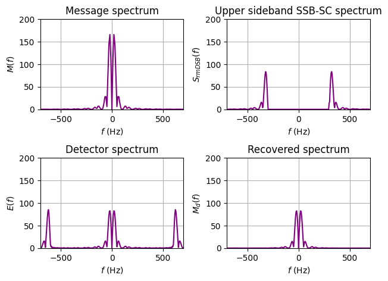

4.12.1 DSB-SC Modulation and Demodulation#
Note: See Textbook
# Save the next 3 lines to import necessary packages, such as numpy
import numpy as np
import matplotlib.pyplot as plt
from scipy.signal import firwin, filter_design as fd, lfilter
---------------------------------------------------------------------------
ModuleNotFoundError Traceback (most recent call last)
Cell In[1], line 2
1 # Save the next 3 lines to import necessary packages, such as numpy
----> 2 import numpy as np
3 import matplotlib.pyplot as plt
4 from scipy.signal import firwin, filter_design as fd, lfilter
ModuleNotFoundError: No module named 'numpy'
# Save this code as triplesinc.py
# Generating a baseband signal for modulation
# Usage: m = triplesinc(t, Ta)
def triplesinc(t, Ta):
# t is the length of the signal
# Ta is the parameter, equaling twice the delay
sig_1 = np.sinc(2 * t / Ta)
sig_2 = np.sinc(2 * t / Ta - 1)
sig_3 = np.sinc(2 * t / Ta + 1)
m = 2 * sig_1 + sig_2 + sig_3
return m
# Save this code as ExampleDSB.py
# This example generate DSB-SC modulated signals in t/f domains
ts = 1e-4; t = np.arange(-0.04, 0.04 + ts, ts)
Ta = 0.01
m_sig = triplesinc(t, Ta)
Lfft = len(t)
Lfft = int(2 ** np.ceil(np.log2(Lfft)))
M_fre = np.fft.fftshift(np.fft.fft(m_sig, Lfft))
freqm = np.arange(-Lfft/2, Lfft/2, 1) / (Lfft*ts)
s_dsb = m_sig * np.cos(2*np.pi*500*t)
Lfft = int(2 ** (np.ceil(np.log2(Lfft)) + 1))
S_dsb = np.fft.fftshift(np.fft.fft(s_dsb, Lfft))
freqs = np.arange(-Lfft/2, Lfft/2, 1) / (Lfft*ts)
Trange = [-0.03, 0.03, -2, 2]
Frange = [-600, 600, 0, 200]
plt.figure(1)
td1 = plt.subplot(221); plt.grid()
td1.plot(t, m_sig,'b',linewidth=2); td1.axis(Trange)
td1.set_xlabel(r'$t$ (sec)'); td1.set_ylabel(r'${\it m}({\it t})$')
td2 = plt.subplot(223); plt.grid()
td2.plot(t, s_dsb,'b', linewidth=2); td2.axis(Trange)
td2.set_xlabel(r'$t$ (sec)'); td2.set_ylabel(r'${s}_{\rm{DSB}}({t})$')
fd1 = plt.subplot(222); plt.grid()
fd1.plot(freqm, np.abs(M_fre), 'purple', linewidth=2); fd1.axis(Frange)
fd1.set_xlabel(r'$f$ (Hz)'); fd1.set_ylabel(r'${\it M}({\it f})$')
fd2 = plt.subplot(224); plt.grid()
fd2.plot(freqs, np.abs(S_dsb),'purple', linewidth=2); fd2.axis(Frange)
fd2.set_xlabel(r'$f$ (Hz)'); fd2.set_ylabel(r'${S}_{\rm{DSB}}({f})$')
plt.tight_layout(pad=1.0) # Set the spacing between subfigures
plt.show()

Note: See Textbook
# Save this code as ExampleDSBdemfilt.py
# This example illustrates the effect of DSB-SC modulation and
# demodulation for triangle signal whose bandwidth is theoretically unlimited
# First redefine the triangle signal:
def triangl(t):
return (1-np.abs(t))*(t>=-1)*(t<1)
# The code starts to modulate
ts = 1e-4; t = np.arange(-0.04, 0.04+ts, ts)
m_sig = triangl((t+0.01)/0.01)-triangl((t-0.01)/0.01)
Lm_sig = len(m_sig)
Lfft = len(t)
Lfft = int(2**np.ceil(np.log2(Lfft)))
M_fre = np.fft.fftshift(np.fft.fft(m_sig,Lfft))
freqm = np.arange(-Lfft/2, Lfft/2, 1)/(Lfft*ts)
B_m = 150 # Bandwidth of the signal is B_m Hz.
h = firwin(40,[B_m*ts],window='hamming',pass_zero='lowpass')
t = np.arange(-0.04, 0.04+ts, ts); Ta = 0.01
fc = 300 # carrier frequency
s_dsb = m_sig*np.cos(2*np.pi*fc*t) # DSB-SC modulation
Lfft = len(t)
Lfft = int(2**np.ceil(np.log2(Lfft)+1))
S_dsb = np.fft.fftshift(np.fft.fft(s_dsb,Lfft)) # frequency domain
freqs = np.arange(-Lfft/2, Lfft/2, 1)/(Lfft*ts)
# 1st demodulation step by multiplying with the carrier
s_dem = s_dsb*np.cos(2*np.pi*fc*t)*2
S_dem = np.fft.fftshift(np.fft.fft(s_dem,Lfft)) # frequency domain
# Using an ideal LPF with bandwidth 150 Hz to reject 2fc components
s_rec = lfilter(h, 1, s_dem)
S_rec = np.fft.fftshift(np.fft.fft(s_rec,Lfft)) # frequency domain
Trange=[-0.025, 0.025, -2, 2]; Frange=[-700, 700, 0, 200]
plt.figure()
plt.subplot(221); td1 = plt.plot(t,m_sig,'blue'); plt.grid()
plt.axis(Trange); plt.setp(td1,'linewidth',1.5)
plt.xlabel(r'${\it t}$ (sec)'); plt.ylabel(r'${\it m}({\it t})$')
plt.title('Message signal')
plt.subplot(222); td2 = plt.plot(t,s_dsb,'blue'); plt.grid()
plt.axis(Trange); plt.setp(td2,'linewidth',1.5)
plt.xlabel(r'${\it t}$ (sec)'); plt.ylabel(r'${\it s}_{\rm DSB}({\it t})$')
plt.title('DSB-SC modulated signal')
plt.subplot(223); td3 = plt.plot(t,s_dem,'blue'); plt.grid()
plt.axis(Trange); plt.setp(td3,'linewidth',1.5)
plt.xlabel(r'${\it t}$ (sec)'); plt.ylabel(r'${\it e}({\it t})$')
plt.title(r'${\it e}({\it t})$')
plt.subplot(224); td4 = plt.plot(t,s_rec,'blue'); plt.grid()
plt.axis(Trange); plt.setp(td4,'linewidth',1.5)
plt.xlabel(r'${\it t}$ (sec)'); plt.ylabel(r'${\it m}_d({\it t})$')
plt.title('Recovered signal')
plt.tight_layout(pad=1.0) # Set the spacing between subfigures
plt.show()
plt.figure()
plt.subplot(221); plt.axis(Frange)
plt.plot(freqm, np.abs(M_fre), 'purple', linewidth=1.5); plt.grid()
plt.xlabel(r'$f$ (Hz)'); plt.ylabel(r'${M}(f)$')
plt.title('Message spectrum')
plt.subplot(222); plt.axis(Frange)
plt.plot(freqs, np.abs(S_dsb), 'purple', linewidth=1.5); plt.grid()
plt.xlabel(r'$f$ (Hz)'); plt.ylabel(r'${S}_{\rm DSB}({f})$')
plt.title('DSB-SC spectrum')
plt.subplot(223); plt.axis(Frange)
plt.plot(freqs, np.abs(S_dem), 'purple', linewidth=1.5); plt.grid()
plt.xlabel(r'$f$ (Hz)'); plt.ylabel(r'${E}({\it f})$')
plt.title('Spectrum of ${\it e}(\it t)$')
plt.subplot(224); plt.axis(Frange)
plt.plot(freqs, np.abs(S_rec), 'purple', linewidth=1.5); plt.grid()
plt.xlabel(r'$f$ (Hz)'); plt.ylabel(r'${M}_d({\it f})$')
plt.title('Recovered spectrum')
plt.tight_layout(pad=1.0) # Set the spacing between subfigures
plt.show()


4.12.2 AM Modulation and Demodulation#
Note: See Textbook
# Save this code as ExampleAMdemfilt.py
import numpy as np
import matplotlib.pyplot as plt
from scipy.signal import firwin, filter_design as fd, lfilter
# This example illustrates conventional AL modulation and noncoherent
# demodulation for triangle signal whose bandwidth is theoretically unlimited
# First redefine the triangle signal:
def triangl(t):
return (1-np.abs(t))*(t>=-1)*(t<1)
ts = 1e-4; t = np.arange(-0.04, 0.04+ts, ts)
Ta = 0.01; fc = 500 # carrier frequency
m_sig = triangl((t+0.01)/0.01) - triangl((t-0.01)/0.01) # generating m(t)
Lm_sig = len(m_sig); Lfft = len(t)
Lfft = int(2**np.ceil(np.log2(Lfft)))
M_fre = np.fft.fftshift(np.fft.fft(m_sig, Lfft))
freqm = np.arange(-Lfft/2, Lfft/2) / (Lfft*ts)
B_m = 150 # Bandwidth of the signal is B_m Hz.
h = firwin(40, [B_m*ts], window = "hamming", pass_zero = 'lowpass')
# AM signal generated by adding a carrier component to DSB-SC
s_am = (1 + m_sig) * np.cos(2*np.pi*fc*t); Lfft = len(t)
Lfft = int(2**np.ceil(np.log2(Lfft)+1))
S_am = np.fft.fftshift(np.fft.fft(s_am, Lfft)) # frequency domain
freqs = np.arange(-Lfft/2, Lfft/2) / (Lfft*ts)
# Demodulation begins by using a rectifier
s_dem = s_am * (s_am > 0)
S_dem = np.fft.fftshift(np.fft.fft(s_dem, Lfft)) # frequency domain
# Using an ideal LPF with bandwidth 150 Hz to recover the message m(t)
s_rec = lfilter(h, 1, s_dem)
S_rec = np.fft.fftshift(np.fft.fft(s_rec, Lfft)) # frequency domain
Trange = [-0.025, 0.025, -2, 2]; Frange=[-700, 700, 0, 200]
fig1 = plt.figure(); fig1.subplots_adjust(hspace=0.5,wspace=0.4)
plt.subplot(221); plt.axis(Trange)
td1 = plt.plot(t, m_sig, 'blue', linewidth=1.5); plt.grid()
plt.xlabel(r'${\it t}$ (sec)')
plt.ylabel(r'${\it m}({\it t})$')
plt.title('Message signal')
plt.subplot(222); plt.axis(Trange)
td2 = plt.plot(t, s_am, 'blue', linewidth=1.5); plt.grid()
plt.xlabel(r'${\it t}$ (sec)')
plt.ylabel(r'${\it s}_{\rm DSB}({\it t})$')
plt.title('AM modulated signal')
plt.subplot(223); plt.axis(Trange)
td3 = plt.plot(t, s_dem, 'blue', linewidth=1.5); plt.grid()
plt.xlabel(r'${\it t}$ (sec)')
plt.ylabel(r'${\it e}({\it t})$')
plt.title('Rectified signal without local carrier')
plt.subplot(224); Trangelow = [-0.025, 0.025, -0.5, 1]; plt.axis(Trangelow)
plt.plot(t, s_rec, 'blue', linewidth=1.5); plt.grid()
plt.xlabel(r'${\it t}$ (sec)')
plt.ylabel(r'${\it m}_d({\it t})$')
plt.title('Detected signal')
plt.show()
plt.figure()
plt.subplot(221); plt.axis(Frange)
fd1 = plt.plot(freqm, abs(M_fre), 'purple', linewidth=1.5); plt.grid()
plt.xlabel(r'${\it f}$ (Hz)'); plt.ylabel(r'${M}({f})$')
plt.title('Message spectrum')
plt.subplot(222); plt.axis(Frange)
fd2 = plt.plot(freqs, abs(S_am), 'purple', linewidth=1.5); plt.grid()
plt.xlabel(r'${\it f}$ (Hz)'); plt.ylabel(r'${S}_{\rm AM}({f})$')
plt.title('AM spectrum')
plt.subplot(223); plt.axis(Frange)
plt.plot(freqs, np.abs(S_dem), 'purple', linewidth=1.5); plt.grid()
plt.xlabel(r'${\it f}$ (Hz)'); plt.ylabel(r'${E}({\it f})$')
plt.title('Rectified spectrum')
plt.subplot(224); plt.axis(Frange)
plt.plot(freqs, np.abs(S_rec), 'purple', linewidth=1.5); plt.grid()
plt.xlabel(r'${\it f}$ (Hz)'); plt.ylabel(r'${M}_d({\it f})$')
plt.title('Recovered spectrum')
plt.tight_layout()
plt.show()


4.12.3 SSB-SC Modulation and Demodulation#
Note: See Textbook
# Save this code as ExampleSSBdemfilt.py
import numpy as np
import matplotlib.pyplot as plt
from scipy.signal import firwin, filter_design as fd, lfilter
# This example uses triangl to illustrate SSB modulation and demodulation
# for triangle signal whose bandwidth is theoretically unlimited
# First redefine the triangle signal:
def triangl(t):
return (1-np.abs(t))*(t>=-1)*(t<1)
ts = 1e-4; t = np.arange(-0.04, 0.04 + ts, ts)
Ta = 0.01; fc = 300 # carrier frequency
m_sig = triangl((t+0.01)/0.01)-triangl((t-0.01)/0.01)
Lm_sig = len(m_sig); Lfft = len(t)
Lfft = int(2 ** np.ceil(np.log2(Lfft)))
M_fre = np.fft.fftshift(np.fft.fft(m_sig, Lfft))
freqm = np.arange(-Lfft/2, Lfft/2)*(1/(Lfft*ts))
B_m = 150 # Bandwidth of the signal is B_m Hz.
h = firwin(40,[B_m*ts],window='hamming',pass_zero='lowpass') #filter
s_dsb = m_sig * np.cos(2 * np.pi * fc * t); Lfft = len(t)
Lfft = int(2 ** (np.ceil(np.log2(Lfft) + 1)))
L_lsb = np.floor(fc * ts * Lfft)
SSBfilt = np.ones(Lfft)
SSBfilt[int(Lfft/2 - L_lsb):int(Lfft/2 + L_lsb)] = 0
S_ssb = np.fft.fftshift(np.fft.fft(s_dsb, Lfft)) * SSBfilt
freqs = np.arange(-Lfft/2, Lfft/2)*(1/(Lfft*ts))
s_ssb = np.real(np.fft.ifft(np.fft.ifftshift(S_ssb)))
s_ssb = s_ssb[:Lm_sig]
# Demodulation begins by multiplying with the carrier
s_dem = s_ssb * np.cos(2 * np.pi * fc * t) * 2
S_dem = np.fft.fftshift(np.fft.fft(s_dem, Lfft))
# Using an ideal LPF with bandwidth 150 Hz
s_rec = lfilter(h, 1, s_dem)
S_rec = np.fft.fftshift(np.fft.fft(s_rec, Lfft))
Trange = [-0.025, 0.025, -1, 1]; Frange=[-700, 700, 0, 200]
fig1 = plt.figure(); fig1.subplots_adjust(hspace=0.5,wspace=0.4)
plt.subplot(221); plt.axis(Trange)
td1 = plt.plot(t, m_sig, 'b', linewidth=1.5); plt.grid()
plt.xlabel(r'${\it t}$ (sec)'); plt.ylabel(r'${\it m}({\it t})$');
plt.title('Message signal')
plt.subplot(222); plt.axis(Trange)
td2 = plt.plot(t, s_ssb, 'b', linewidth=1.5); plt.grid()
plt.xlabel(r'${\it t}$ (sec)'); plt.ylabel(r'${s}_{\rm SSB}({t})$')
plt.title('SSB-SC modulated signal')
plt.subplot(223); plt.axis(Trange)
td3 = plt.plot(t, s_dem, 'b', linewidth=1.5); plt.grid()
plt.xlabel(r'${\it t}$ (sec)'); plt.ylabel(r'${\it e}({\it t})$')
plt.title('After multiplying local carrier')
plt.subplot(224); plt.axis(Trange)
td4, = plt.plot(t, s_rec, 'b', linewidth=1.5); plt.grid()
plt.xlabel(r'${\it t}$ (sec)'); plt.ylabel(r'${\it m}_d({\it t})$')
plt.title('Recovered signal')
plt.tight_layout(pad=1.0) # Set the spacing between subfigures
plt.show()
fig2 = plt.figure()
fig2.subplots_adjust(hspace=0.5,wspace=0.4)
plt.subplot(221);plt.axis(Frange)
fd1 = plt.plot(freqm, np.abs(M_fre),'purple',linewidth=1.5); plt.grid()
plt.xlabel(r'${\it f}$ (Hz)')
plt.ylabel(r'${\it M}({\it f})$')
plt.title('Message spectrum')
plt.subplot(222);plt.axis(Frange)
fd2 = plt.plot(freqs, np.abs(S_ssb),'purple',linewidth=1.5); plt.grid()
plt.xlabel(r'${\it f}$ (Hz)');
plt.ylabel(r'${\it S}_{rm DSB}({\it f})$')
plt.title('Upper sideband SSB-SC spectrum')
plt.subplot(223); plt.axis(Frange)
fd3 = plt.plot(freqs, np.abs(S_dem),'purple',linewidth=1.5); plt.grid()
plt.xlabel(r'${\it f}$ (Hz)')
plt.ylabel(r'${\it E}({\it f})$');
plt.title('Detector spectrum');
plt.subplot(224); plt.axis(Frange)
fd4 = plt.plot(freqs,abs(S_rec),'purple',linewidth=1.5); plt.grid()
plt.xlabel(r'${\it f}$ (Hz)')
plt.ylabel(r'${\it M}_d({\it f})$')
plt.title('Recovered spectrum');
plt.tight_layout(pad=1.0) # Set the spacing between subfigures
plt.show()



4.12.4 QAM Modulation and Demodulation#
Note: See Textbook
# Save this code as ExampleQAMdemfilt.py
import numpy as np
import matplotlib.pyplot as plt
from scipy.signal import firwin, filter_design as fd, lfilter
# This example uses triangl triplesinc to illustrate QAM modulation
# and demodulation of two message signals
# First define the two message signals:
def triangl(t):
return (1-np.abs(t))*(t>=-1)*(t<1)
def triplesinc(t, Ta):
# t is the length of the signal
# Ta is the parameter, equaling twice the delay
sig_1 = np.sinc(2 * t / Ta); sig_2 = np.sinc(2 * t / Ta - 1)
sig_3 = np.sinc(2 * t / Ta + 1)
m = 2 * sig_1 + sig_2 + sig_3
return m
ts=1.e-4; t=-np.arange(-0.04, 0.04 + ts, ts)#0.04:ts:0.04
Ta=0.01; fc=300 # carrier frequency of QAM
# Use triangl.m and triplesinc.m to generate
# two message signals of different shapes and spectra
m_sig1=triangl((t+0.01)/0.01)-triangl((t-0.01)/0.01)
m_sig2=triplesinc(t,Ta)
Lm_sig = len(m_sig1)
Lfft = len(t); Lfft = int(2** np.ceil(np.log2(Lfft)))
M1_fre = np.fft.fftshift(np.fft.fft(m_sig1,Lfft))
M2_fre = np.fft.fftshift(np.fft.fft(m_sig2,Lfft))
freqm = np.arange(-Lfft/2, Lfft/2) / (Lfft * ts)
B_m=150 #Bandwidth of the signal is B_m Hz.
# Design a simple lowpass filter with bandwidth B_m Hz.
h = firwin(40,[B_m*ts],window='hamming',pass_zero='lowpass')
# QAM signal generated by adding a carrier to DSB-SC
s_qam = m_sig1 *np.cos(2*np.pi*fc*t) + m_sig2 * np.sin(2*np.pi*fc*t)
Lfft = len(t); Lfft = int(2**np.ceil(np.log2(Lfft)+1))
S_qam = np.fft.fftshift(np.fft.fft(s_qam,Lfft))
freqs = np.arange(-Lfft/2, Lfft/2) / (Lfft * ts)
# Demodulation begins by using a rectifier
s_dem1 = s_qam * np.cos(2 * np.pi * fc * t) * 2
S_dem1 = np.fft.fftshift(np.fft.fft(s_dem1,Lfft))
# Demodulate the 2nd signal
s_dem2 = s_qam * np.sin(2 * np.pi * fc * t)*2
S_dem2 = np.fft.fftshift(np.fft.fft(s_dem2,Lfft))
# Using an ideal LPF with bandwidth 150 Hz
s_rec1 = lfilter(h,1,s_dem1)
S_rec1 = np.fft.fftshift(np.fft.fft(s_rec1,Lfft))
s_rec2 = lfilter(h,1,s_dem2)
S_rec2 = np.fft.fftshift(np.fft.fft(s_rec2,Lfft))
Trange=[-0.025, 0.025, -2, 2]; Trange2=[-0.025, 0.025, -2, 4]
fig1 = plt.figure(); fig1.subplots_adjust(hspace=0.5,wspace=0.4)
plt.subplot(221); plt.axis(Trange)
td1 = plt.plot(t,m_sig1,'b'); plt.grid()
plt.xlabel(r'${t}$ (sec)'); plt.ylabel(r'${ m}_1({\it t})$')
plt.title('Message signal 1')
plt.subplot(222); plt.axis(Trange)
td2 = plt.plot(t,s_qam,'b'); plt.grid()
plt.xlabel(r'${t}$ (sec)'); plt.ylabel(r'${s}_{\rm QAM}(t)$')
plt.title('QAM modulated signal')
plt.subplot(223); plt.axis(Trange2)
td3 = plt.plot(t,s_dem1,'b'); plt.grid()
plt.xlabel(r'${t}$ (sec)'); plt.ylabel(r'${ x}_1({ t})$')
plt.title('First demodulator output')
plt.subplot(224); plt.axis(Trange)
td4 = plt.plot(t,s_rec1,'b'); plt.grid()
plt.xlabel(r'${t}$ (sec)'); plt.ylabel(r'${\hat m}_{1}(t)$')
plt.title('Detected signal 1')
plt.tight_layout(pad=1.0) # Set the spacing between subfigures
plt.show()
fig2 = plt.figure()
fig2.subplots_adjust(hspace=0.5,wspace=0.4)
plt.subplot(221); plt.axis(Trange)
td5 = plt.plot(t,m_sig2,'b'); plt.grid()
plt.xlabel(r'${\it t}$ (sec)'); plt.ylabel(r'${\it m}({\it t})$')
plt.title('Message signal 2')
plt.subplot(222); plt.axis(Trange)
td6 = plt.plot(t,s_qam,'b'); plt.grid()
plt.xlabel(r'${\it t}$ (sec)'); plt.ylabel(r'${s}_{\rm QAM}({t})$')
plt.title('QAM modulated signal')
plt.subplot(223); plt.axis(Trange2)
td7 = plt.plot(t,s_dem2,'b'); plt.grid()
plt.xlabel(r'${\it t}$ (sec)'); plt.ylabel(r'$x_2({\it t})$')
plt.title('Second demodulator output')
plt.subplot(224); plt.axis(Trange)
td8 = plt.plot(t,s_rec2,'b'); plt.grid()
plt.xlabel(r'${\it t}$ (sec)'); plt.ylabel(r'${\hat m}_{2}({\it t})$')
plt.title('Detected signal 2')
plt.tight_layout(pad=1.0) # Set the spacing between subfigures
plt.show()
Frange=[-700, 700, 0, 250]
fig3 = plt.figure()
fig3.subplots_adjust(hspace=0.5,wspace=0.4)
plt.subplot(221); plt.axis(Frange)
fd1 = plt.plot(freqm,np.abs(M1_fre), 'purple'); plt.grid()
plt.xlabel(r'${\it f}$ (Hz)'); plt.ylabel(r'$M_1({f})$')
plt.title('Message 1 spectrum')
plt.subplot(222); plt.axis(Frange)
fd2 = plt.plot(freqs,np.abs(S_qam), 'purple'); plt.grid()
plt.axis(Frange)
plt.xlabel(r'${\it f}$ (Hz)'); plt.ylabel(r'${S}_{rm QAM}({f})$')
plt.title('QAM spectrum magnitude')
plt.subplot(223); plt.axis(Frange)
fd3 = plt.plot(freqs,np.abs(S_dem1), 'purple'); plt.grid()
plt.xlabel(r'${\it f}$ (Hz)'); plt.ylabel(r'${X}_1({f})$')
plt.title('First demodulator spectrum')
plt.subplot(224); plt.axis(Frange)
fd4 = plt.plot(freqs,np.abs(S_rec1), 'purple'); plt.grid()
plt.xlabel(r'${\it f}$ (Hz)'); plt.ylabel(r'${\hat M}_{1}({f})$')
plt.title('Recovered spectrum 1')
plt.tight_layout(pad=1.0) # Set the spacing between subfigures
plt.show()
fig4 = plt.figure()
fig4.subplots_adjust(hspace=0.5,wspace=0.4)
plt.subplot(221); plt.axis(Frange)
fd1 = plt.plot(freqm,np.abs(M2_fre),'purple'); plt.grid()
plt.xlabel(r'${\it f}$ (Hz)'); plt.ylabel(r'${M}_2({\it f})$')
plt.title('Message 2 spectrum')
plt.subplot(222); plt.axis(Frange)
fd2 = plt.plot(freqs,np.abs(S_qam),'purple'); plt.grid()
plt.xlabel(r'${\it f}$ (Hz)'); plt.ylabel(r'${S}_{rm QAM}({f})$')
plt.title('QAM spectrum magnitude')
plt.subplot(223); plt.axis(Frange)
fd7 = plt.plot(freqs,np.abs(S_dem2),'purple'); plt.grid()
plt.xlabel(r'${\it f}$ (Hz)'); plt.ylabel(r'${X}_2({f})$')
plt.title('Second demodulator spectrum')
plt.subplot(224); plt.axis(Frange)
fd8 = plt.plot(freqs,np.abs(S_rec2),'purple'); plt.grid()
plt.xlabel(r'${\it f}$ (Hz)'); plt.ylabel(r'${\hat M}_{2}({f})$')
plt.title('Recovered spectrum 2')
plt.tight_layout(pad=1.0)# Set the spacing between subfigure
plt.show()


4.12.5 FM Modulation and Demodulation#
Note: See Textbook
# Save this code as ExampleFM.py
# This program uses triangl to illustrate FM/PM modulation/demodulation
def triangl(t):
return (1-np.abs(t))*(t>=-1)*(t<1)
ts = 1e-4; t = np.arange(-0.04, 0.04, ts)
Ta = 0.01
m_sig = triangl((t+0.01)/Ta)-triangl((t-0.01)/Ta)
Lfft = len(t); Lfft = int(2**np.ceil(np.log2(Lfft)))
M_fre = np.fft.fftshift(np.fft.fft(m_sig, Lfft))
freqm = np.arange(-Lfft/2, Lfft/2, 1) / (Lfft * ts)
B_m = 100 # Design a simple lowpass filter with bandwidth B_m Hz.
h = firwin(80,[B_m*ts],window='hamming',pass_zero='lowpass')
kf = 160 * np.pi # FM coefficient
m_intg = kf * ts * np.cumsum(m_sig)
s_fm = np.cos(2 * np.pi * 300 * t + m_intg)
s_pm = np.cos(2 * np.pi * 300 * t + np.pi * m_sig)
Lfft = len(t); Lfft = int(2**np.ceil(np.log2(Lfft + 1)))
S_fm = np.fft.fftshift(np.fft.fft(s_fm, Lfft))
S_pm = np.fft.fftshift(np.fft.fft(s_pm, Lfft))
freqs = np.arange(-Lfft/2, Lfft/2, 1) / (Lfft * ts)
s_fmdem = np.diff(np.concatenate(([s_fm[0]], s_fm)))/ts /kf #taking derivative
s_fmrec = s_fmdem * (s_fmdem > 0) #applying rectifier
s_dec = lfilter(h, 1, s_fmrec) #lowpass filtering
Trange1 = [-0.04, 0.04, -1.2, 1.2]; Trange2 = [-0.04, 0.04, 0, 1.6]
fig1 = plt.figure()
fig1.subplots_adjust(hspace=0.5,wspace=0.4)
plt.subplot(211); plt.axis(Trange1); plt.grid()
m1 = plt.plot(t,m_sig,'b')
plt.xlabel(r'${ t} (sec)$'); plt.ylabel(r'${ m}({ t})$')
plt.title('Message signal')
plt.subplot(212); plt.axis(Trange2); plt.grid()
m2 = plt.plot(t,s_dec,'b')
plt.xlabel(r'${ t} (sec)$'); plt.ylabel(r'$d(t)$')
plt.title('Demodulated FM signal')
plt.tight_layout(pad=1.0) # Set the spacing between subfigures
plt.show()
fig2 = plt.figure()
fig2.subplots_adjust(hspace=0.5,wspace=0.4)
plt.subplot(211); plt.axis(Trange1); plt.grid()
td1 = plt.plot(t,s_fm,'b')
plt.xlabel(r'${ t} (sec)$'); plt.ylabel(r'${s}_{\rm FM}({t})$')
plt.title('FM signal')
plt.subplot(212); plt.axis(Trange1); plt.grid()
td2 = plt.plot(t,s_pm,'b')
plt.xlabel(r'${ t} (sec)$'); plt.ylabel(r'${s}_{\rm PM}({t})$')
plt.title('PM signal')
plt.tight_layout(pad=1.0) # Set the spacing between subfigures
plt.show()
fig3 = plt.figure()
fig3.subplots_adjust(hspace=0.5,wspace=0.8)
plt.figure(figsize=(6.,8))
plt.subplot(311); plt.axis(Trange1); plt.grid()
td1 = plt.plot(t,s_fm,'b')
plt.xlabel(r'${ t} (sec)$'); plt.ylabel(r'${s}_{\rm FM}({t})$')
plt.title('FM signal')
plt.subplot(312)
fp1 = plt.plot(t,s_fmdem,'b'); plt.grid()
plt.xlabel(r'${\it t} (sec)$'); plt.ylabel(r'${d s}_{\rm FM}({t})/dt$')
plt.title('FM derivative')
plt.subplot(313)
fp2 = plt.plot(t,s_fmrec,'b'); plt.grid()
plt.xlabel(r'${\it t} (sec)$')
plt.title('Rectified FM derivative')
plt.tight_layout(pad=1.0) # Set the spacing between subfigures
plt.show()
Frange=[-600, 600, 0, 300]
fig4 = plt.figure()
fig4.subplots_adjust(hspace=0.5,wspace=0.4)
plt.subplot(211); plt.axis(Frange)
fd1 = plt.plot(freqs,np.abs(S_fm),'purple'); plt.grid()
plt.xlabel(r'${\it f} (Hz)$'); plt.ylabel(r'${S}_{\rm FM}({f})$')
plt.title('FM amplitude spectrum')
plt.subplot(212); plt.axis(Frange)
fd2 = plt.plot(freqs,np.abs(S_pm),'purple'); plt.grid()
plt.xlabel(r'${\it f} (Hz)$'); plt.ylabel(r'${S}_{\rm PM}({f})$')
plt.title('PM amplitude spectrum')
plt.tight_layout(pad=1.0) # Set the spacing between subfigures
plt.show()

<Figure size 640x480 with 0 Axes>